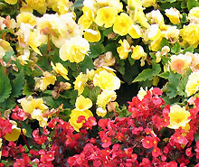
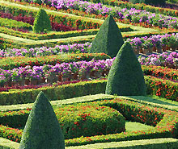
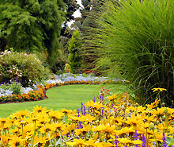
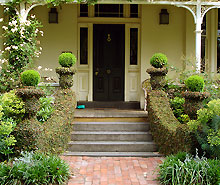
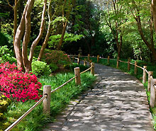
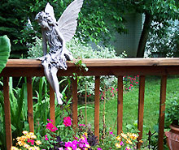
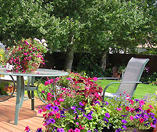

Por que ter uma sala de descompressão?
O objetivo principal é garantir que eles voltem às suas atividades revigorados, descansados e preparados, o que pode aumentar tanto a produtividade quanto a qualidade do trabalho. Esses espaços são projetados para serem confortáveis e estimulantes, com pufes, sofás, atividades recreativas, e em alguns casos, alimentos e bebidas.
Alguns benefícios
-

Contribui para o alívio ao estresse, faz com que as pessoas saiam de suas posições mais comuns no trabalho e, em alguns, casos até se movimentem.
Os funcionários ficam satisfeitos e relaxados, e tendem a produzir mais no trabalho. Pausas planejadas oferecem à mente o tempo necessário para se recuperar e voltar ao trabalho.
-

As opções de atividades dentro da sala de descompressão são o que a tornam tão especial. Jogos de tabuleiro, livros, revistas e música relaxante.
Os benefícios em reutilizar este material estão a diminuição da poluição e contaminação do solo. É possível confeccionar coisas como vasos, cadeiras, poltronas e assim por diante.
-

O uso da sala de descompressão varia de acordo com o ritmo de trabalho, o importante é que seja um espaço acessível e ser utilizado sempre.
O hábito de cuidar das plantas e mexer com a terra é uma atividade capaz de trazer benefícios, a prática é recomendada principalmente para a manutenção da saúde mental.
-

Benéfico para a empresa ela contribui para a redução do estresse, o aumento da produtividade, a melhora da criatividade e a retenção de talentos.
{kind=link}